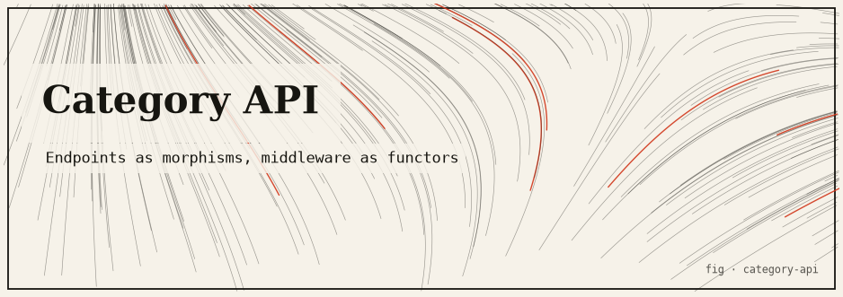

Category Theory for APIs
An HTTP/handler layer modeled as a category — objects are request/response types, morphisms are handlers, composition is middleware chaining — with the relevant laws enforced by property-based tests.

The idea
Category theory is often described as “abstract nonsense” — useful for mathematicians but irrelevant to software. This package tests that claim: can the HTTP request/response pipeline be usefully modeled as a category, and do the category laws actually tell you something useful about middleware correctness?
The answer: yes. Modeling handlers as morphisms and middleware composition as categorical composition immediately reveals associativity as a correctness requirement (the order of middleware application must not depend on parenthesization) and identity handlers as the category’s unit elements. Both laws are enforced by property-based tests using fast-check.
What is a category?
A category is one of the most economical structures in mathematics. It consists of objects and, between them, morphisms (also called arrows or maps). You do not look inside the objects; all the content lives in how the arrows connect and combine. To qualify as a category, three things must hold.
- Composition. If f : A → B and g : B → C are morphisms, there is a composite g ∘ f : A → C. Arrows that line up can always be joined end to end.
- Identity. Every object A has an identity morphism idₐ : A → A that does nothing when composed: id ∘ f = f and f ∘ id = f.
- Associativity. Composition does not care how you group it: (h ∘ g) ∘ f = h ∘ (g ∘ f).
Those two equations — the identity law and the associativity law — are the category laws. They sound almost too obvious to state, but that is exactly why they are useful: any system that genuinely satisfies them inherits the entire toolbox of categorical reasoning, and any system that violates them has a concrete bug you can point at.
How this project demonstrates it
The mapping is direct. Objects are the request and response types.
Morphisms are handlers, each a function
(req: Req) → Promise<Res>. Composition is
middleware chaining, (g ∘ f)(req) = g(f(req)), and the
identity is a pass-through handler that returns its input untouched.
Written out this way, the two laws stop being abstract. Associativity becomes the
requirement that a middleware chain behaves the same no matter how it is grouped — you can
refactor logging(auth(handler)) into a pre-composed
(logging ∘ auth) stage without changing behaviour. Identity
becomes the guarantee that inserting a no-op middleware is always safe. The project encodes both
as executable properties and hands them to fast-check, which generates random
handler triples and random single handlers and searches for any input that breaks a law,
shrinking failures to a minimal counterexample when it finds one.
Honest caveat: real HTTP handlers can perform side effects and are not pure functions, so “handlers form a category” is an idealization that holds for the composition behaviour being tested, not a claim that every possible handler is a well-behaved morphism. The value is that writing the laws down as property tests turns a vague sense of “middleware should be well-behaved” into checks that actually fail when composition misbehaves.
Category theory for APIs questions
What is a category in category theory?
A category is a collection of objects together with morphisms (arrows) between them, subject to two laws: morphisms compose associatively, and every object has an identity morphism that acts as a unit for composition. In this project the objects are request/response types and the morphisms are HTTP handlers.
How do the category laws apply to HTTP handlers?
Middleware chaining is composition: (g ∘ f)(req) = g(f(req)). A pass-through handler is the identity. Associativity means the outcome cannot depend on how the middleware chain is parenthesized, and identity means inserting a no-op handler changes nothing. Both are real correctness requirements, not just abstractions.
How are the category laws enforced?
With property-based tests using fast-check. Random handler triples check that (h ∘ g) ∘ f is equivalent to h ∘ (g ∘ f), and random handlers check that id ∘ f and f ∘ id both equal f. Instead of a few hand-picked cases, the tests probe many generated inputs to expose violations.
The mathematics
Objects: Request types, Response types
Morphisms: Handler = (req: Req) → Promise<Res>
Composition:
(g ∘ f)(req) = g(f(req)) (middleware chaining)
Identity morphism:
id(req) = req (pass-through middleware)
Category laws:
1. Associativity: (h ∘ g) ∘ f ≡ h ∘ (g ∘ f)
→ verified by property-based tests over random handler triples
2. Left identity: id ∘ f ≡ f
3. Right identity: f ∘ id ≡ f
→ verified by property-based tests over random handlers
Run it
git clone https://github.com/caelum0x/awesome-mad-projects.git cd category-api npm install npm test # property-based tests via fast-check npm run build # TypeScript compile check